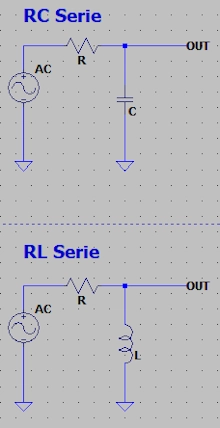
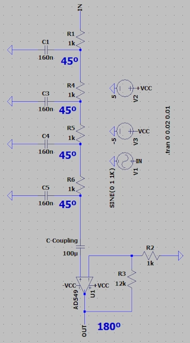
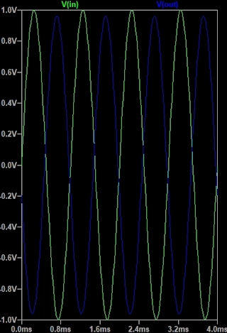

| R | Resistance in Ohms |
| X(L,C) | Inductor or Capacitor Reactance |
| Ang. | Angle in Degress |
| R | |
| X(L,C) | |
| Ang. | |
| ---| Cientific Notation |--- | ||||
| femto | pico | nano | micro | mili |
| e-15 | e-12 | e-9 | e-6 | e-3 |
| Kilo | Mega | Giga | Tera | Peta |
| e+3 | e+6 | e+9 | e+12 | e+15 |


